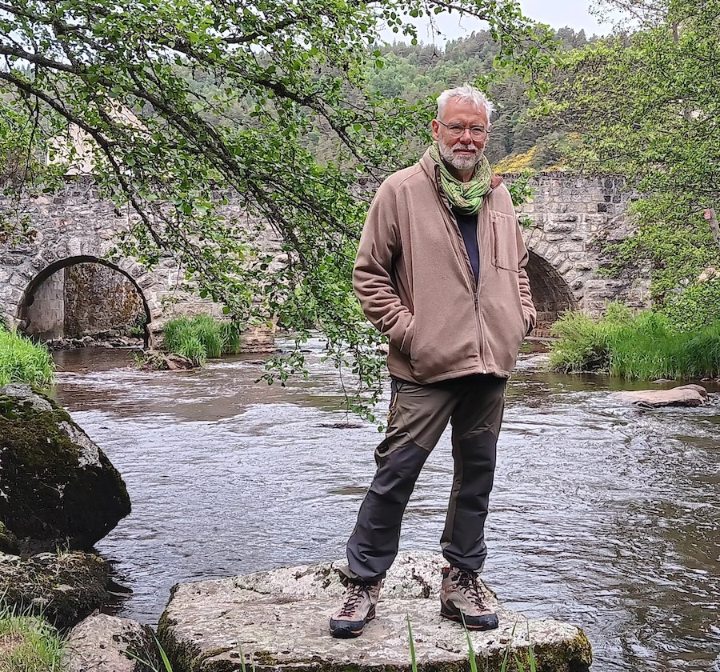

Bonjour,

Bienvenue sur mon site !
Je m'appelle Hervé Belleudy, passionné de nature et d’eau, j’ai choisi de me reconvertir dans l’art fascinant de la sourcellerie et du travail de sourcier radiesthésiste.
Après une carrière en tant qu‘Expert RH dans une administration, j’ai décidé de suivre une voie qui reflète de nouvelles valeurs et une connexion avec la nature. Ce métier de sourcier à Marseille me permet de mettre mes compétences au service de la recherche d’eau et une écoute de l’environnement.
De ce changement d’orientation est né ma curiosité pour les ressources cachées de notre milieu et une envie sincère d’aider les autres. Bien que je sois encore au début de mon parcours dans la sourcellerie, j’ai décidé de suivre une formation sérieuse auprès de Caroline D’Elbée, sourcier reconnue.
Lien vers vers le site internet : https://delbee-caroline.fr/Ma motivation et un apprentissage constants me permettent de progresser chaque jour. Pour moi, la radiesthésie appliquée à la détection de l’eau souterraine n’est pas seulement une technique : c’est un art, une démarche intuitive et respectueuse de l’équilibre naturel.